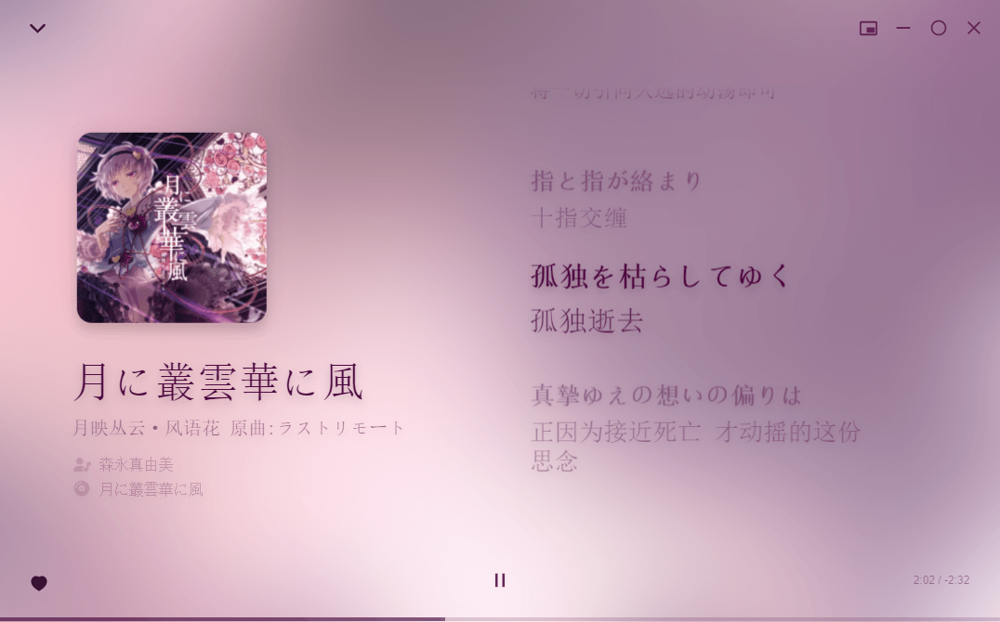
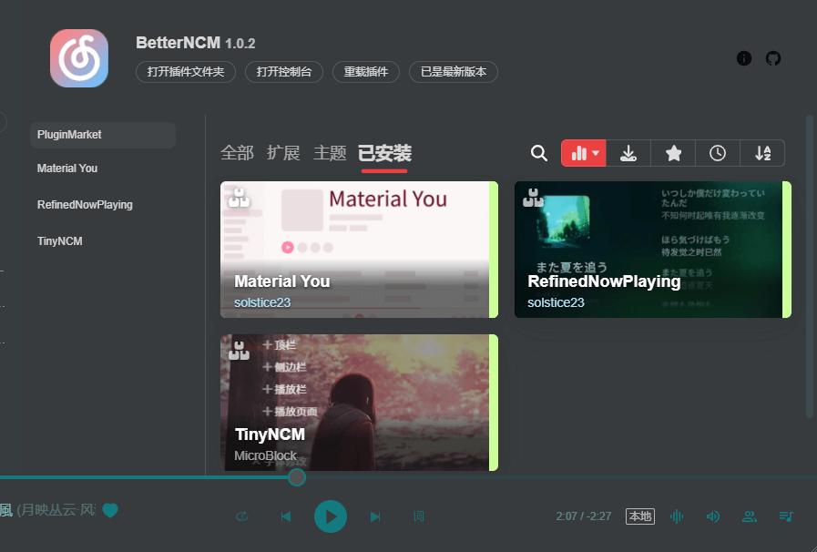
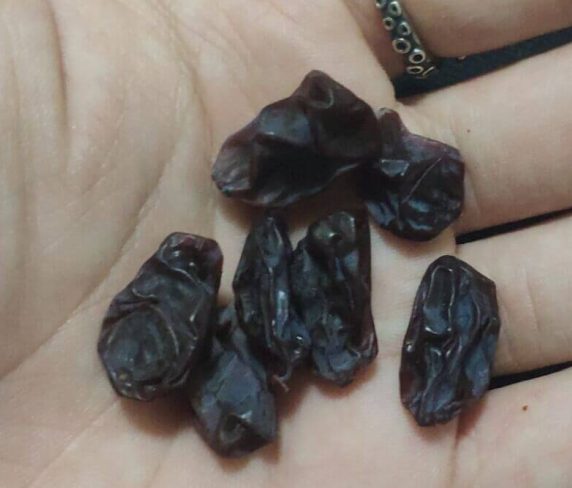
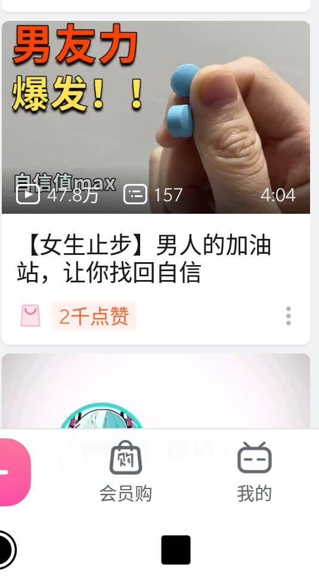
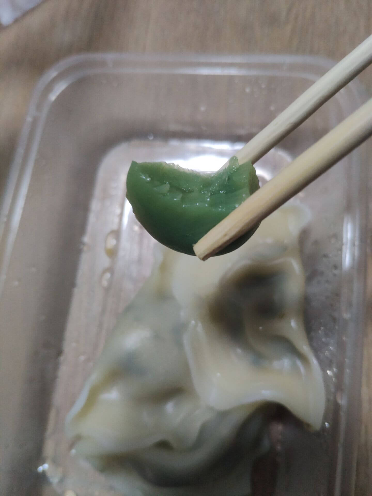

——踽踽独行。
分享一个好插件，嗯是网易云的插件，不是你用的。
一款网易云插件
功能强大，同时非常好看（划重点）
这是我使用的插件
插件并不算稳定，因此我使用了如图几款。就很好了。
今天心情不太好来着。
一来开发不算顺利，一些当初没有设计好的功能，感觉需要重新写一部分，也就是一个完好的功能，因为设计缺陷，需要修改，并且重写还有一些技术上的问题需要克服。还有我做事的方法不对，我需要改正，记住这个错误。
二来是一些感情上的问题，困扰着我。
三来是由上面引发的对未来的迷茫以及对自己的不自信等种种孤独感。
坚持住呗，一些计划需要提前， 一些目标需要实现。
很快，就能告此一段落，希望一切顺利，我会努力的。
我只做我的事情，无论命运的列车通向何方。
总有一天，命运的列车会把你带到我身边。
希望一切都来得及。
前些天，终于把去年夏天晾的提子干吃完了。
卖相一般，但是非常甜，脆，香味饱满。
是的没错，很脆，因为这个品种的皮晾干之后，稍微有点韧性，但绝非那种太柴的感觉。
说起来，这是我在水果店冰箱捞出来的便宜货。
如你所知，水果会水分蒸发，巧妙的是在冰箱放久了，依旧保持新鲜。
我买了一大袋，老板还很高兴有人帮他处理“残次品”，于是就很愉快地随意收了我20块。
棒，有机会还买，就是晾需要一点功夫。
其实我个人比较懒来着，我指的是，我晾好之后，都没有脱粒，就让提子干挂在枝上，乍一看量还挺多的，实际上总共加起来估计也就日常喝水的瓶子都装不满。
估计也就330cc左右？
自己都不够吃来着，就不方便与朋友分享了。
话说B站，都开始推一些奇怪的东西给我了
难道我是真的虚了么？
所以有没有粉色的？
其实放广告嘛，我理解嘛。
不过这种是否……哎，反正B站充斥着软色情，网络暴力等元素，反正我是尽可能远离这些。
我其实深深地感觉出，人类是无聊的，人与人之间的认知水平是有巨大鸿沟的，人与人之间是没法好好沟通，相互理解的……（又在念经了我
色情这东西相对我来说，我非常接受。只是说，我清晰认知，这对未成年人是不适合的。
随便啦，管好自己就很好啦。
品尝了一直挺好奇的但没吃过的食物：醋蒜。
我有个朋友非常非常喜欢这个，我也很好奇，但是一直没机会试一下。
恰好晚上的外卖饺子可以加配菜，我就加了一份。
在我的感知里边，这玩意应该是软塌塌的，一股蒜味，谈不上好吃。
送来之后，我迫不及待地夹了一颗，没想到是脆的，味道不错啊。
hhh，果然有时候，实际和想象会大相径庭，“纸上得来终觉浅，绝知此事要躬行”。
于是我又吃了好几颗，并且思考到，这玩意，能不能拿来烤生蚝。
有机会试试好吧。
说实在的，这玩意的卖相，是真的好看，翠绿翠绿的。我个人非常喜欢这种透彻的感觉。
总之，可以，好吃，下次还可以点一些吃。（就是吃完后味道有点大。
睡觉吧，明天可能心情会好一点。
让我坠入无边黑暗的深海。